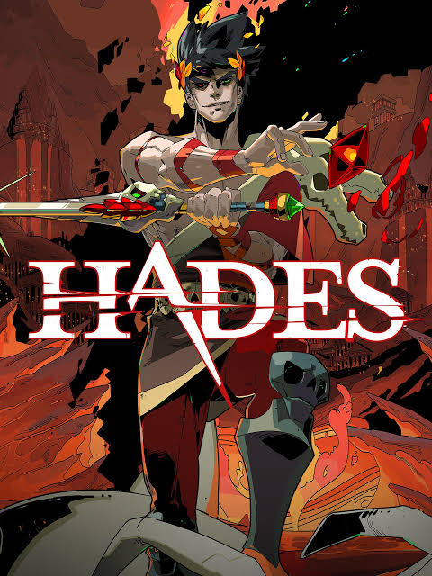
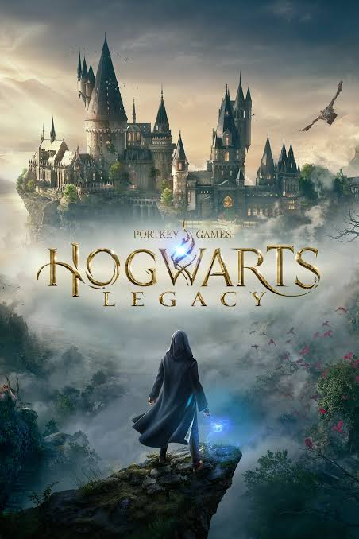
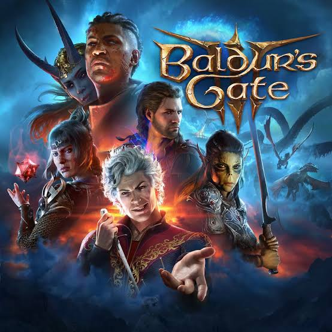
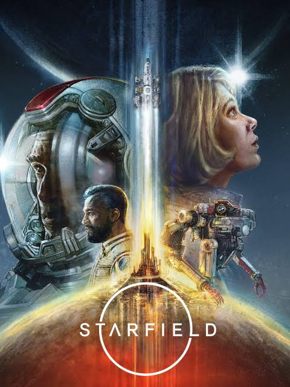

My Top-Rated Games for 2023
We have had a wild ride for games this year in 2023, and this list contains some of my new favorite new releases along with some oldies that I find myself coming back to.
My Top 5 Games
5. Hades
An oldie as far as 2023 goes and not a new release, but by far one of the games I have found myself playing a lot of this year. Hades was released in 2018 and you follow the son of Hades trying to escape the underworld. It has an overall rating of 4.6 stars and is a super fun fighting/role-playing game. It takes number 5 on my list since it is not normally my style of game, but enjoyable, nonetheless.

4.Battlefield 2042
This was a game I got introduced to late 2022 and have found myself continuously playing. Battlefield 2042 is a first-person shooter that supports 128 players in a server to allow for all out warfare on vast envioronments. Made by EA and released in 2021, it is not new to 2023 but they have made some awesome updates that I feel fixed a lot of the issues that made this game so controversial in the begining of its release. They added an all-new class system along with new maps and fixed a lot of the issues that made the game iffy. Overall, I find it to be a good game to get the blood pumping and adrenaline going.
3.Hogwarts Legacy
This game takes my number 3 spot because it was an absolute blast to play. Normally, I am a big grouch on games based on movies/books, and I have never personally been a fan of any Harry Potter game made. This game completely changed my perception on this since it was so different from every other movie-based game I had played. You play as a character you create and enter the world of Hogwarts before the timeline of Harry Potter. Overall, it was a very fun game, but it was sad that the hype for this game did seem to die off pretty quickly.
2.Baldur's Gate 3
If you love Dungeons & Dragons, you'll love Baldur's Gate 3. This was a game I was really anticipating this year and I can safely say I am really happy with its long-anticipated wait. It has a huge amount of freedom and possibilities and is overall very visually appealing with an epic story.
1. Starfield
For our big number one, Starfield has easily taken the cake as one of my favorite games of this year. It offers a massive universe to travel, tons of planets to explore, romance, base and ship building, action, and classic first-person shooter action. This has been one of the most jaw dropping games I have played in a long time, and the visuals are truly spectacular. The wait for this game has been long and awaited, and I do not regret every second anticipating this game for as long as I have.